Note
Go to the end to download the full example code.
Tight layout guide#
How to use tight-layout to fit plots within your figure cleanly.
Tip
tight_layout was the first layout engine in Matplotlib. The more modern and more capable Constrained Layout should typically be used instead.
tight_layout automatically adjusts subplot params so that the subplot(s) fits in to the figure area. This is an experimental feature and may not work for some cases. It only checks the extents of ticklabels, axis labels, and titles.
Simple example#
With the default Axes positioning, the axes title, axis labels, or tick labels can sometimes go outside the figure area, and thus get clipped.
import matplotlib.pyplot as plt
import numpy as np
plt.rcParams['savefig.facecolor'] = "0.8"
def example_plot(ax, fontsize=12):
ax.plot([1, 2])
ax.locator_params(nbins=3)
ax.set_xlabel('x-label', fontsize=fontsize)
ax.set_ylabel('y-label', fontsize=fontsize)
ax.set_title('Title', fontsize=fontsize)
plt.close('all')
fig, ax = plt.subplots()
example_plot(ax, fontsize=24)
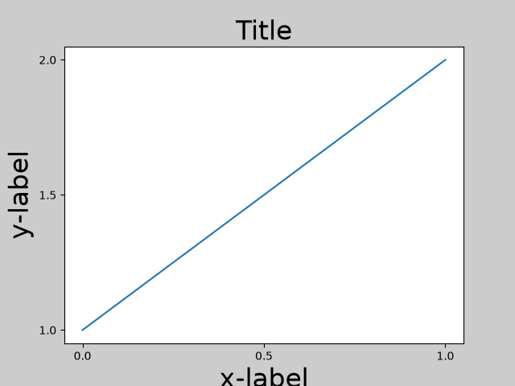
To prevent this, the location of Axes needs to be adjusted. For
subplots, this can be done manually by adjusting the subplot parameters
using Figure.subplots_adjust. Figure.tight_layout does this
automatically.
fig, ax = plt.subplots()
example_plot(ax, fontsize=24)
plt.tight_layout()
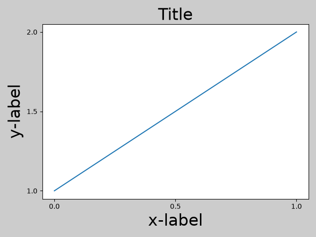
Note that matplotlib.pyplot.tight_layout() will only adjust the
subplot params when it is called. In order to perform this adjustment each
time the figure is redrawn, you can call fig.set_tight_layout(True), or,
equivalently, set rcParams["figure.autolayout"] (default: False) to True.
When you have multiple subplots, often you see labels of different Axes overlapping each other.
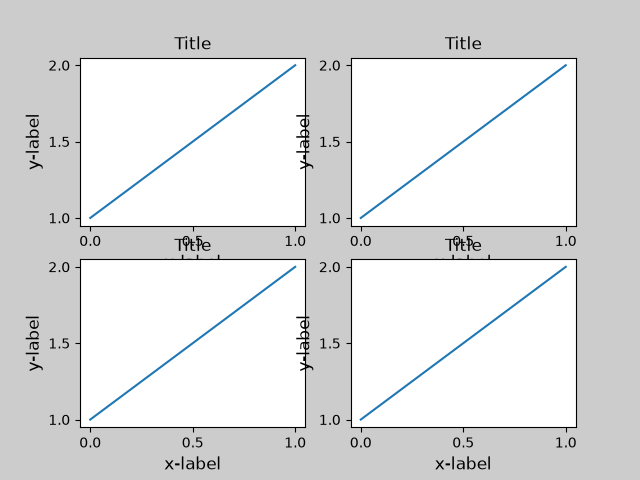
tight_layout() will also adjust spacing between
subplots to minimize the overlaps.
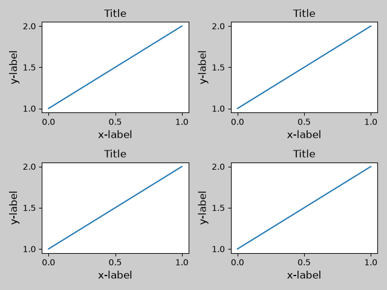
tight_layout() can take keyword arguments of
pad, w_pad and h_pad. These control the extra padding around the
figure border and between subplots. The pads are specified in fraction
of fontsize.
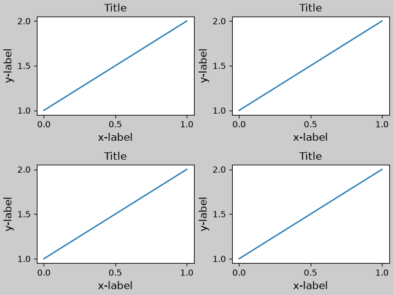
tight_layout() will work even if the sizes of
subplots are different as far as their grid specification is
compatible. In the example below, ax1 and ax2 are subplots of a 2x2
grid, while ax3 is of a 1x2 grid.
plt.close('all')
fig = plt.figure()
ax1 = plt.subplot(221)
ax2 = plt.subplot(223)
ax3 = plt.subplot(122)
example_plot(ax1)
example_plot(ax2)
example_plot(ax3)
plt.tight_layout()
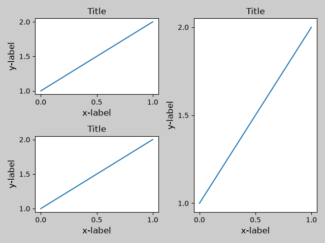
It works with subplots created with
subplot2grid(). In general, subplots created
from the gridspec (Arranging multiple Axes in a Figure) will work.
plt.close('all')
fig = plt.figure()
ax1 = plt.subplot2grid((3, 3), (0, 0))
ax2 = plt.subplot2grid((3, 3), (0, 1), colspan=2)
ax3 = plt.subplot2grid((3, 3), (1, 0), colspan=2, rowspan=2)
ax4 = plt.subplot2grid((3, 3), (1, 2), rowspan=2)
example_plot(ax1)
example_plot(ax2)
example_plot(ax3)
example_plot(ax4)
plt.tight_layout()
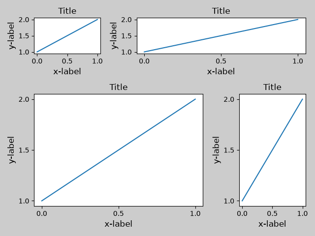
Although not thoroughly tested, it seems to work for subplots with aspect != "auto" (e.g., Axes with images).
arr = np.arange(100).reshape((10, 10))
plt.close('all')
fig = plt.figure(figsize=(5, 4))
ax = plt.subplot()
im = ax.imshow(arr, interpolation="none")
plt.tight_layout()
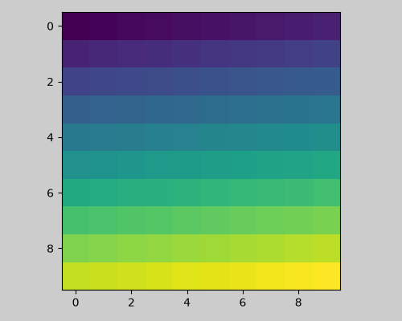
Caveats#
tight_layoutconsiders all artists on the Axes by default. To remove an artist from the layout calculation you can callArtist.set_in_layout.tight_layoutassumes that the extra space needed for artists is independent of the original location of Axes. This is often true, but there are rare cases where it is not.pad=0can clip some texts by a few pixels. This may be a bug or a limitation of the current algorithm, and it is not clear why it happens. Meanwhile, use of pad larger than 0.3 is recommended.The algorithm of
tight_layoutdoes not necessarily converge, i.e. callingtight_layoutmultiple times can lead to slight variations in the layout between the calls.
Use with GridSpec#
GridSpec has its own GridSpec.tight_layout method (the pyplot api
pyplot.tight_layout also works).
import matplotlib.gridspec as gridspec
plt.close('all')
fig = plt.figure()
gs1 = gridspec.GridSpec(2, 1)
ax1 = fig.add_subplot(gs1[0])
ax2 = fig.add_subplot(gs1[1])
example_plot(ax1)
example_plot(ax2)
gs1.tight_layout(fig)
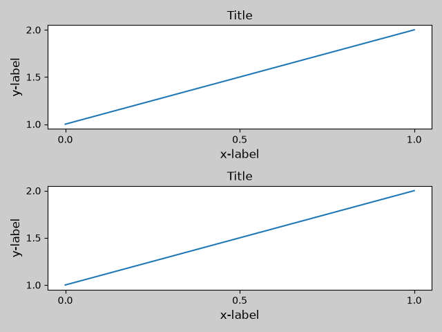
You may provide an optional rect parameter, which specifies the bounding box that the subplots will be fit inside. The coordinates are in normalized figure coordinates and default to (0, 0, 1, 1) (the whole figure).
fig = plt.figure()
gs1 = gridspec.GridSpec(2, 1)
ax1 = fig.add_subplot(gs1[0])
ax2 = fig.add_subplot(gs1[1])
example_plot(ax1)
example_plot(ax2)
gs1.tight_layout(fig, rect=[0, 0, 0.5, 1.0])
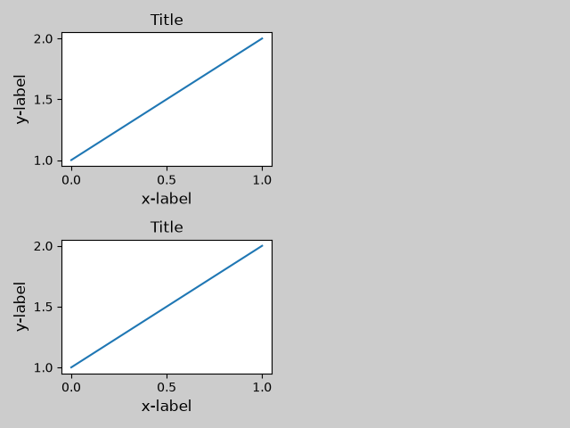
However, we do not recommend that this be used to manually construct more complicated layouts, like having one GridSpec in the left and one in the right side of the figure. For these use cases, one should instead take advantage of Nested Gridspecs, or the Figure subfigures.
Legends and annotations#
Pre Matplotlib 2.2, legends and annotations were excluded from the bounding box calculations that decide the layout. Subsequently, these artists were added to the calculation, but sometimes it is undesirable to include them. For instance in this case it might be good to have the Axes shrink a bit to make room for the legend:
fig, ax = plt.subplots(figsize=(4, 3))
lines = ax.plot(range(10), label='A simple plot')
ax.legend(bbox_to_anchor=(0.7, 0.5), loc='center left',)
fig.tight_layout()
plt.show()
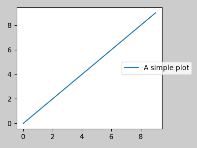
However, sometimes this is not desired (quite often when using
fig.savefig('outname.png', bbox_inches='tight')). In order to
remove the legend from the bounding box calculation, we simply set its
bounding leg.set_in_layout(False) and the legend will be ignored.
fig, ax = plt.subplots(figsize=(4, 3))
lines = ax.plot(range(10), label='B simple plot')
leg = ax.legend(bbox_to_anchor=(0.7, 0.5), loc='center left',)
leg.set_in_layout(False)
fig.tight_layout()
plt.show()
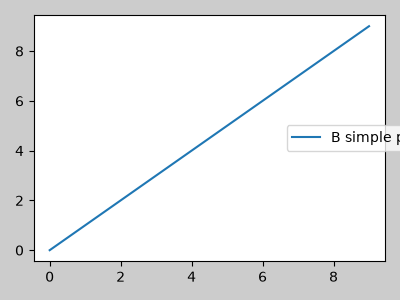
Use with AxesGrid1#
Limited support for mpl_toolkits.axes_grid1 is provided.
from mpl_toolkits.axes_grid1 import Grid
plt.close('all')
fig = plt.figure()
grid = Grid(fig, rect=111, nrows_ncols=(2, 2),
axes_pad=0.25, label_mode='L',
)
for ax in grid:
example_plot(ax)
ax.title.set_visible(False)
plt.tight_layout()
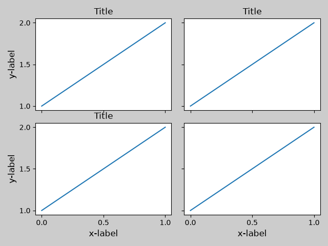
Colorbar#
If you create a colorbar with Figure.colorbar, the created colorbar is
drawn in a Subplot as long as the parent Axes is also a Subplot, so
Figure.tight_layout will work.
plt.close('all')
arr = np.arange(100).reshape((10, 10))
fig = plt.figure(figsize=(4, 4))
im = plt.imshow(arr, interpolation="none")
plt.colorbar(im)
plt.tight_layout()
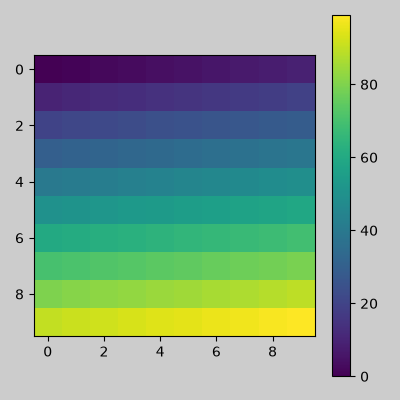
Another option is to use the AxesGrid1 toolkit to explicitly create an Axes for the colorbar.
from mpl_toolkits.axes_grid1 import make_axes_locatable
plt.close('all')
arr = np.arange(100).reshape((10, 10))
fig = plt.figure(figsize=(4, 4))
im = plt.imshow(arr, interpolation="none")
divider = make_axes_locatable(plt.gca())
cax = divider.append_axes("right", "5%", pad="3%")
plt.colorbar(im, cax=cax)
plt.tight_layout()
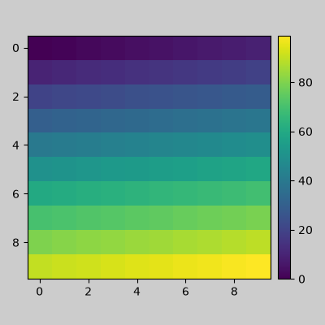
Total running time of the script: (0 minutes 7.845 seconds)